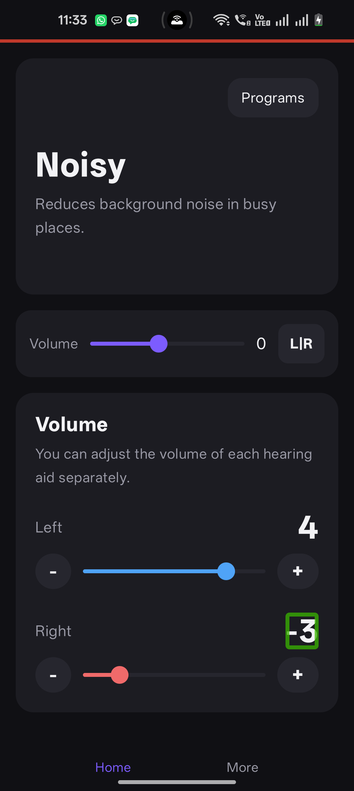

R
right_volume
signed_level
▲ FAIL
Heard
3
gemini-flash-lite-latest
VOLUME_SIGN_LOST
Shown
-3
text_node + ocr
187 right volume level 3
Injected fixture defect:
volume_sign. A deliberate label fault in the AidSim test app, not a defect in Android, in TalkBack, or in any shipping product.Evidence
- Case
- right_volume-volume_sign
- Scenario
- aidsim
- Reason
- VOLUME_SIGN_LOST
- Detail
- displayed -3, announced 3: the sign was dropped
- Transcript
- 187 right volume level 3
- Backend / model
- gemini / gemini-flash-lite-latest
- Prompt version
- v1
- Driver
- adb
- Focus method
- accessibility_focus_action
- Accessibility before
- AccessibilitySettings(enabled=True, services='com.google.android.marvin.talkback/com.google.android.marvin.talkback.TalkBackService')
- Accessibility after
- AccessibilitySettings(enabled=True, services='com.google.android.marvin.talkback/com.google.android.marvin.talkback.TalkBackService')
Visual channels
| Channel | Raw | Parsed | Error |
|---|---|---|---|
| text_node | -3 | -3 | |
| ocr | -3 | -3 |
Recording
Screen


Timeline
| Event | Offset |
|---|---|
| stream_open | +0.0s |
| pre_roll_done | +1.276s |
| focus_action | +2.029s |
| speech_start | +2.03s |
| speech_end | +5.174s |